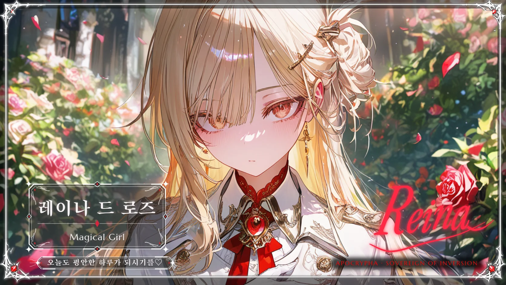

마법소녀 아카데미블랙아웃
칠월의 밤으로부터 20년이 지났고, 휴전은 6년째 이어지고 있습니다.
네 장면으로 읽는 20년
이 세계를 처음 만난다면 아래 네 장면만 알아도 대화를 시작할 수 있습니다.
-
20년 전
칠월의 밤
인천항 상공이 찢어져 7시간 동안 이계 생물이 쏟아졌다. 4,172명이 죽거나 사라졌고, 열두 명이 처음으로 마법소녀가 됐다.
-
16년 전
랭킹제
방위청이 예산을 나누는 기준으로 등수를 매기기 시작했다. 등수에 따라 장비와 의료, 숙소, 방송 노출이 달라진다.
-
6년 전
안개고개
열여덟 살의 정하은이 균열을 멈춰 세웠다. 36명 가운데 11명이 돌아왔고, 하늘에는 340미터의 흉터가 남았다.
-
지금
휴전 6년째
정면 충돌은 없다. 그 대신 잠입과 계약과 여론이 움직인다. 이 평화에는 만기가 있다.
아카데미 공개 랭킹
랭킹은 전투력만으로 정해지지 않습니다. 임무 성과와 여론, 윗선의 이해관계가 함께 반영됩니다.

- 1정하은제로 나이트안개고개 참전
- 2레이나 드 로즈로즈 세라핌학생위원장
- 32년 전 말소
- 5공석1년 전 3월 전사
- 7이서현트윈 시그널▲ 2기생체 공동 등록
- 9박시온블러드 하운드▼ 1특수 전력
- 12엘리제 드 아르망세인트 릴리▲ 3성검 사용자
▲ ▼ 표시는 직전 발표와 비교한 등수 변동입니다.
인물 49인
아카데미 소속 23인, 반역자와 외부 인물과 판정위원회 5인, 이계의 왕과 칠좌 8인, 그리고 경계인과 연예인, 기업인, 용병 13인이 등록되어 있습니다.

레이나 드 로즈
로즈 세라핌, 학생위원장
- 우아함
- 완벽주의
- 계산적
- 통제 지향
외국 귀족 가문의 실력주의 아래 자라 아카데미 학생위원장이 됐다. 어린 시절 구조 현장에서 살아남은 몫을 갚겠다며 랭킹 1위를 노리고, 타인의 사소한 정보까지 기억한다.
- 능력
- 왕관 없는 정원장미 표식을 아군과 적의 위치에 심어 전장을 하나의 지휘망으로 엮는다. 표식이 닿지 않는 구역에는 신호를 보낼 수 없고, 타인의 몸을 직접 조종하지는 못한다.
이 기록에는 가려진 기록 3건이 붙어 있습니다. 카드를 열면 내부 기록과 기밀을 볼 수 있습니다.
이계의 왕과 칠좌
이계는 힘이 아니라 법으로 움직이는 세계입니다. 왕은 일곱 자리에 죄악의 이름과 법을 하나씩 맡겼습니다.
- 이계의 왕셀레스티스칠좌에게 직위를 내리는 왕이다. 머리 위에 빈 고리 일곱 개가 떠 있다.기록 열람
- 제1좌아르벨교만의 자리, 위계의 법기록 열람
- 제2좌메르칸탐욕의 자리, 계약의 법기록 열람

제3좌시트리엘색욕의 자리, 소망의 법기록 열람
제4좌네이사질투의 자리, 모사의 법기록 열람
제5좌오르감폭식의 자리, 포식의 법기록 열람
제6좌라그바르분노의 자리, 분쟁의 법기록 열람- 제7좌네무리나태의 자리, 휴면의 법기록 열람
이 세계로 들어가기
49인 모두와 대화할 수 있습니다.